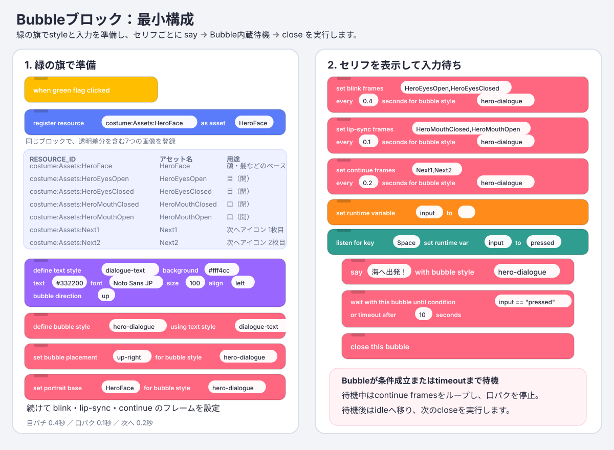
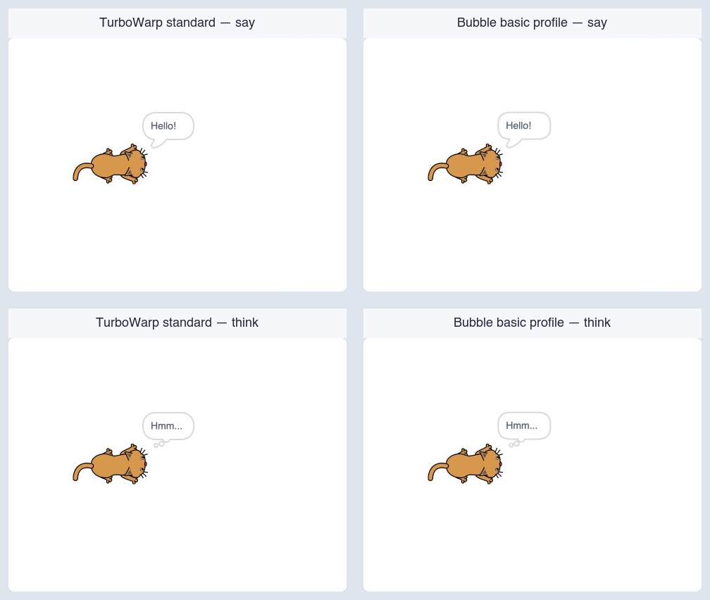
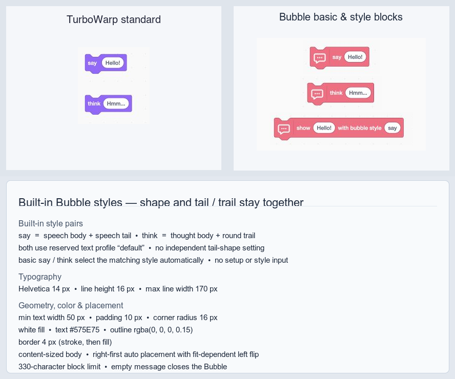
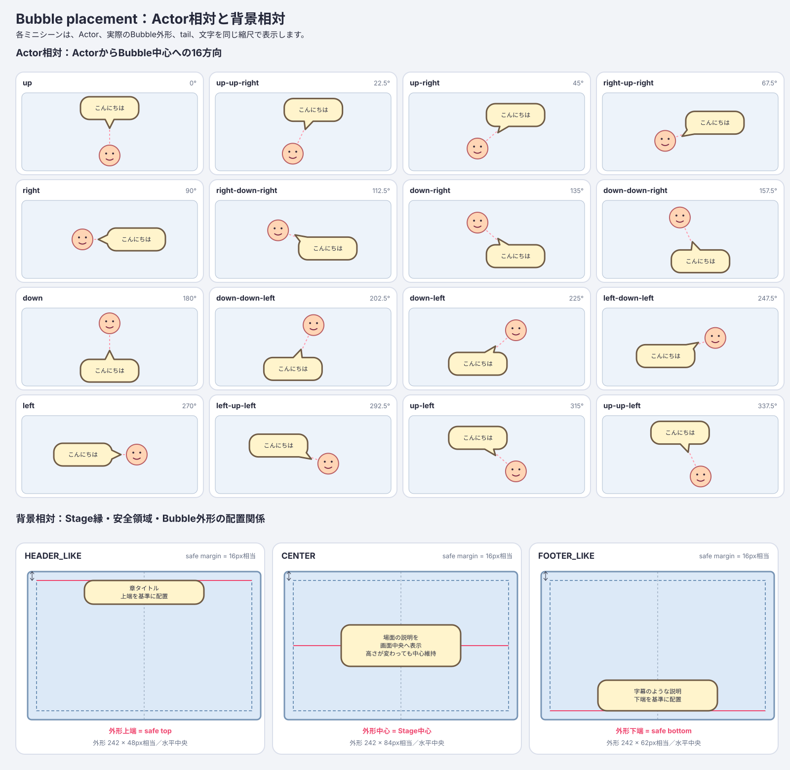
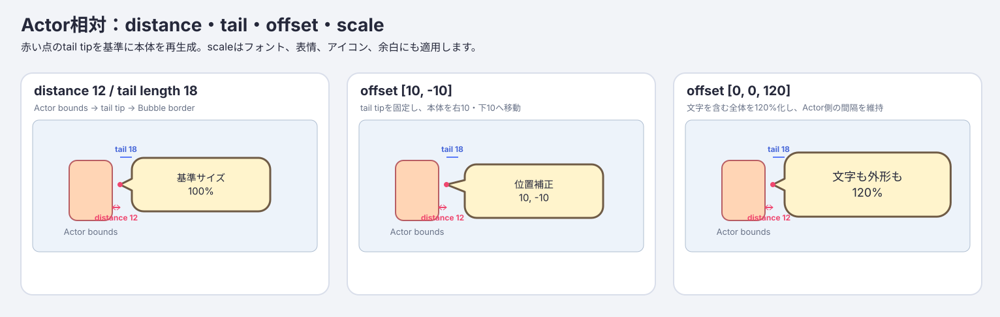
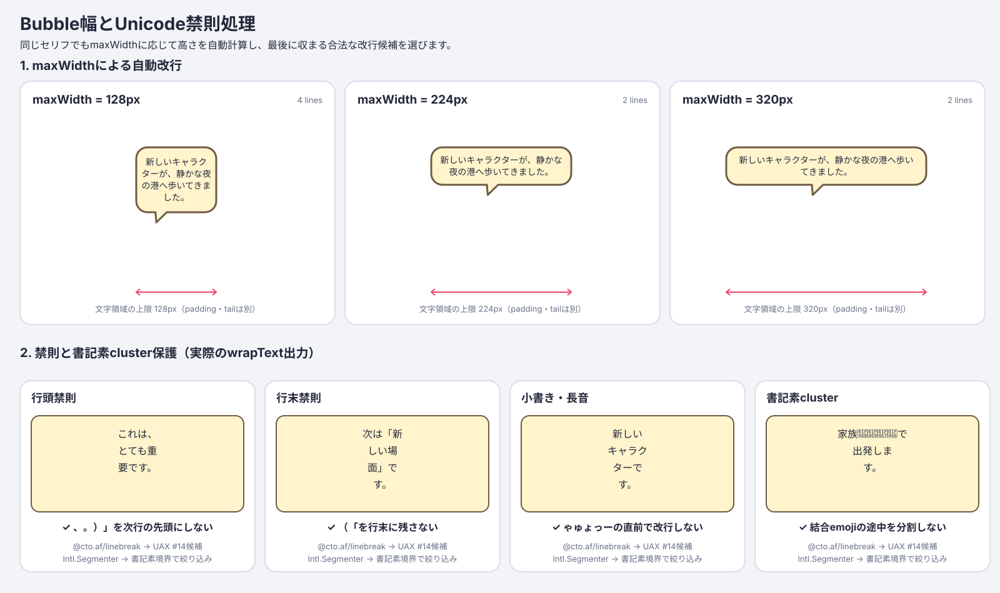
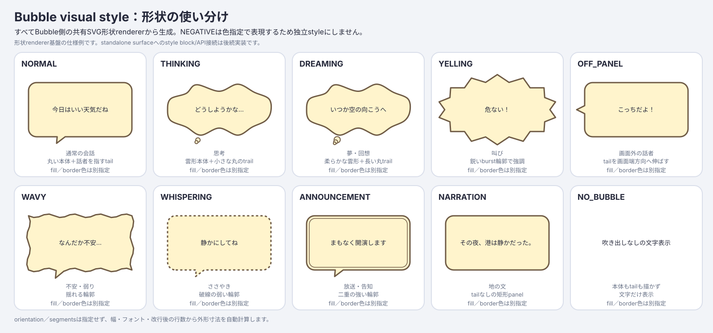
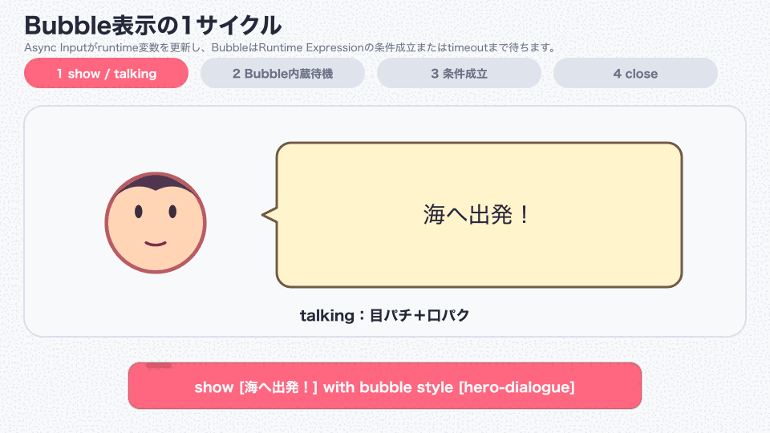
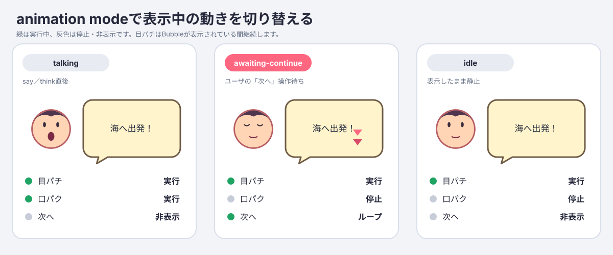

TurboWarp Bubble Block Manual
This manual explains how to use turbowarp-bubble as an unsandboxed TurboWarp custom extension. A Bubble combines an SVG body, text, a character portrait, blinking and lip-sync layers, and an animated continue indicator.
Kamishibai DSL 4.0 bundle: In the combined runtime palette, click the documentation button directly below the Bubble member heading to open this manual. The bundled blocks keep the styles, placement, portrait, reveal, audio, wait, animation, clone, and cleanup behavior documented here; their member namespace and Bubble icon identify their origin.

1. Load the required extensions
The complete input-wait example uses five extensions. Add Temporary Variables from TurboWarp's extension library, then load the custom extensions needed by the selected features with Run without sandbox enabled. Bubble bundles the host-neutral SVG Text 0.8.1 layout provider and creates no text skin on its default SVG overlay. Asset Manager is required for portrait, lip-sync, continue indicator, voice, and display-sound assets. Async Input and Runtime Expression are required only for condition-based Bubble waits and close policies; a timeout-only close policy needs neither.
| Order | Extension | URL |
|---|---|---|
| 1 | Temporary Variables | Add from the TurboWarp extension library |
| 2 | Async Input 0.4.0 | https://cdn.jsdelivr.net/npm/@kubohiroya/turbowarp-async-input@0.4.0/dist/async-input.js |
| 3 | Runtime Expression 0.4.0 | https://cdn.jsdelivr.net/npm/@kubohiroya/turbowarp-runtime-expression@0.4.0/dist/runtime-expression.js |
| 4 | Asset Manager 0.12.1 | https://cdn.jsdelivr.net/npm/@kubohiroya/turbowarp-asset-manager@0.12.1/dist/asset-manager.js |
| 5 | Bubble 0.9.0 | https://cdn.jsdelivr.net/npm/@kubohiroya/turbowarp-bubble@0.9.0/dist/turbowarp-bubble.js |
To try a development build, load this repository's dist/turbowarp-bubble.js as a local custom extension. Bubble reports an explicit error if the renderer lacks the default SVG overlay APIs, if an image/media feature is used without Asset Manager, or if Async Input or Runtime Expression is missing when it starts a condition-based Bubble wait. The lower-level Composition API can inject another text capability.
See also:
2. Prepare portrait assets
The following example stores costumes in a hidden asset sprite named Assets.
| Costume | Asset Manager name | Contents |
|---|---|---|
HeroFace |
HeroFace |
Face, hair, and outline, excluding the animated eyes/mouth |
HeroEyesOpen |
HeroEyesOpen |
Transparent overlay containing only the open eyes |
HeroEyesClosed |
HeroEyesClosed |
Transparent overlay containing only the closed eyes |
HeroMouthClosed |
HeroMouthClosed |
Transparent overlay containing only the closed mouth |
HeroMouthOpen |
HeroMouthOpen |
Transparent overlay containing only the open mouth |
Next1 |
Next1 |
First frame of the continue indicator |
Next2 |
Next2 |
Second frame of the continue indicator |
Use the same canvas size and center point for the base, eye, and mouth images. Keep overlay backgrounds transparent; mismatched canvases or centers make the layers drift when composed.
Register each costume with Asset Manager:
register resource [costume:Assets:HeroFace] as asset [HeroFace]
register resource [costume:Assets:HeroEyesOpen] as asset [HeroEyesOpen]
register resource [costume:Assets:HeroEyesClosed] as asset [HeroEyesClosed]
register resource [costume:Assets:HeroMouthClosed] as asset [HeroMouthClosed]
register resource [costume:Assets:HeroMouthOpen] as asset [HeroMouthOpen]
register resource [costume:Assets:Next1] as asset [Next1]
register resource [costume:Assets:Next2] as asset [Next2]
For a remote image, pass its HTTPS URL as RESOURCE_ID. Bubble accepts only assets already registered with Asset Manager whose MIME type is image/*.
3. Select a text layout style
Standalone Bubble bundles the SVG Text 0.8.1 layout composition and installs two Bubble styles: say owns the speech body and speech tail, while think owns the thought body and round trail. A style's body and tail/trail shapes are one visual choice, not separately selected properties. The short say [MESSAGE] and think [MESSAGE] blocks select the matching style automatically, so the basic path needs neither a style definition nor a style input. Both styles use the reserved text profile default, a content-sized body, 14px Helvetica text, right-first placement with a fit-dependent left flip, 330-character block-input limit, and empty-message close behavior. Their 4px SVG stroke is painted before the white fill, hiding the inner half so the visible outline matches TurboWarp's standard bubble. Any other text style name or explicit style-setting block selects the custom profile. Custom text styles are initialized on first use with transparent-background SVG Text defaults. If a project separately loads the stock SVG Text 0.8.1 extension before Bubble, Bubble uses its public getLayoutCapability() instead and preserves the named styles defined by SVG Text blocks. An older loaded SVG Text extension without that handoff produces an explicit compatibility error rather than silently replacing the style; select the documented scratch-render fallback only when needed.
define bubble style [hero-dialogue] using text style [default]
Application hosts that need custom fonts, colors, or alignment can define styles on createSvgTextLayoutComposition() and inject them through createSvgTextOverlayTextCapability(). The custom profile uses the same layoutText() API and does not create an SVG text skin on the default overlay backend. Bubble owns placement, tail, and outer shape.
4. Define a Bubble style
For a basic Bubble, use the short blocks directly. They select the built-in Bubble styles say and think, respectively:
say [Hello!]
think [Hmm…]
TurboWarp standard comparison
These screenshots come from one TurboWarp Editor project using the English UI, a Cat sprite at x=-80, y=0, size 80%, a white Stage, and matching Hello! / Hmm... inputs. The standard Looks blocks are on the left. Bubble's short basic blocks are on the right and use their matching built-in say / think styles; no definition or setter block is used.

The Stage panels show the right-side placement, content-sized body, and the speech tail or thought trail pointing back toward the Actor in each implementation. Bubble renders an independent SVG surface, and every panel is a crop of the actual TurboWarp Stage.

The block image shows the no-setup path and the unified custom-style block. The short blocks select the matching built-in styles automatically. The callout shows each inseparable body-plus-tail/trail pair, maps both styles to the reserved text profile default, and lists the shared typography, geometry, colors, border paint order, and placement. Use show [MESSAGE] with bubble style [STYLE] for named custom styles. The former styled say/think opcodes remain hidden compatibility definitions for saved projects.
The following setters intentionally switch the style to the custom profile:
define bubble style [hero-dialogue] using text style [default]
set bubble placement [up-right] for bubble style [hero-dialogue]
set bubble distance [12] for bubble style [hero-dialogue]
set bubble visual style [NORMAL] for bubble style [hero-dialogue]
set bubble tail length [18] for bubble style [hero-dialogue]
set bubble offset x [0] y [0] scale [100] % for bubble style [hero-dialogue]
Actor-relative and stage-relative placement

Each of the 16 actor-relative directions is shown as a complete mini-scene containing an actor, Bubble body, tail, and text. The two tail-base points lie on the body border. The renderer uses a JSClipper union to produce a single path, so no internal border remains at the join.
The three stage-relative diagrams show the Stage frame, safe area, Bubble dimensions, horizontal centerline, and relevant reference edge or center. The diagrams and the TurboWarp drawable are generated by the same shared renderBubbleSvg implementation.
Actor-relative placement applies to the custom profile and specifies the direction from the actor's center toward the center of the entire Bubble. The untouched basic profile uses Scratch's right-first placement and automatic left flip. The menu provides these 16 canonical directions:
up / up-up-right / up-right / right-up-right
right / right-down-right / down-right / down-down-right
down / down-down-left / down-left / left-down-left
left / left-up-left / up-left / up-up-left
Compass aliases such as north, north-northeast, and northeast may also be typed directly or supplied by a reporter. A number uses Scratch direction semantics from 0 through 360 degrees: 0 is up, 90 right, 180 down, 270 left, and 360 normalizes to 0. Arbitrary angles are not rounded to the 16 menu directions. The default is up-right.
Stage-relative placements do not point at an actor and are positioned within the Stage safe area.
| Placement | Position |
|---|---|
HEADER_LIKE |
Top of the Stage safe area, centered |
CENTER |
Horizontal and vertical center of the Stage |
FOOTER_LIKE |
Bottom of the Stage safe area, centered |
These placements do not depend on actor coordinates, bounds, or visibility. Use one of them when running say or think from the Stage. A stage-relative Bubble has no actor-pointing tail.
Actor distance, tail, body offset, and scale

distance(default12) is the gap between the actor bounds and the tail tip. Actor bounds means the axis-aligned bounding box (AABB) of the rendered actor in Stage coordinates.tail length(default18) is the nominal distance from the Bubble border to the tail tip at the normal position.offset x/y/scale(default[0, 0, 100]) uses positive x to the right, positive y upward, and scale as a percentage.[10, -10, 120]moves the body 10 right and 10 down, then scales it to 120%.
Scale applies to the body, SVG Text, portrait base, blink/lip-sync layers, continue indicator, and internal padding as one unit, so the displayed font size scales by the same factor. When scale alone changes, the body center moves away from the actor by the increase in radius, preserving the actor-side gap. The x/y offset is added afterward. The tail tip remains fixed and the union with the body border is regenerated, so an offset can change the effective tail length.
Near a Stage edge, keeping the scaled Bubble on-screen takes priority and can reduce the requested distance. Actor-relative distance, tail, offset, and scale settings do not apply to HEADER_LIKE, CENTER, or FOOTER_LIKE.
Width, automatic wrapping, and Japanese line-breaking rules

The diagram is generated by running the production wrapText implementation. @cto.af/linebreak supplies Unicode UAX #14 break opportunities, which are filtered against Intl.Segmenter grapheme boundaries. The renderer then chooses the last candidate that fits the measured width. It avoids unnatural breaks before punctuation, closing brackets, small kana and prolonged sound marks, and inside a combined emoji grapheme.
Bubble visual styles

Available shapes are NORMAL, THINKING, DREAMING, YELLING, OFF_PANEL, WAVY, WHISPERING, ANNOUNCEMENT, NARRATION, and NO_BUBBLE.
set bubble visual style [YELLING] for bubble style [hero-dialogue]
The diagram and TurboWarp drawable both use Bubble's shared renderBubbleSvg function. Shapes with triangular tails use a platener/jsclipper union between the body and tail. THINKING and DREAMING use circular trails and are excluded from that union. Actor-relative placement points the tail toward the actor; stage-relative placement has no tail. NO_BUBBLE hides the body drawable and displays only text, portrait, and other layers.
The default visual style is NORMAL. The body drawable is created before text and portrait drawables so it remains behind them. close this bubble, target/clone disposal, and runtime disposal release the body drawable and its owned SVG skin.
NEGATIVE is not a separate style because it can be expressed with fill and border colors. Orientation and segments are also not public inputs; dimensions are calculated from width, font, character count, and the number of lines after wrapping.
Now configure the portrait and continue animation layers:
set portrait base [HeroFace] for bubble style [hero-dialogue]
set portrait [top-left] offset x [-4] y [6] zoom [120] % corner radius [12] px for bubble style [hero-dialogue]
set blink frames [HeroEyesOpen,HeroEyesClosed]
every [0.4] seconds for bubble style [hero-dialogue]
set lip-sync frames [HeroMouthClosed,HeroMouthOpen]
every [0.1] seconds for bubble style [hero-dialogue]
set continue frames [Next1,Next2]
every [0.2] seconds for bubble style [hero-dialogue]
ASSETS is a comma-separated list of Asset Manager names. Surrounding whitespace is removed; commas cannot be part of an asset name.
- Blink and lip-sync animations accept one or more frames. A single frame remains static.
- Use two or more continue frames so the loop is visible.
SECONDSmust be a finite number greater than zero.- An empty
ASSETSinput removes that animation. - Portrait placement defaults to
left.leftandrightcenter the image vertically at the corresponding edge;top-left,top-right,bottom-left, andbottom-rightalign it to that corner. The portrait keeps its own column, so it does not overlap the text unless a large offset moves it there. - Portrait x is positive to the right and y is positive upward. Zoom is a positive percentage of the 96 px portrait box and is applied before the whole-Bubble scale. Corner radius is zero or greater in pixels and is capped at half of the displayed portrait width or height.
- Selecting
none, or using an empty portrait base, removes the whole portrait including blink and lip-sync settings. Set the base again before choosing another layout. - Rounded corners use the Bubble fill as a mask over the base, blink, and lip-sync layers.
NO_BUBBLEhas no fill to supply that mask, so its portrait remains rectangular.
5. Sequential reveal, audio, and layout
Bubble can reveal a message as CHARACTER, WORD, LINE, or BLOCK units. WORD does not perform morphological analysis; it uses whitespace or the configured delimiter character set. Delimiters can remain visible or be hidden.
set bubble reveal unit [CHARACTER] every [0.05] seconds layout [RESERVED] for bubble style [hero-dialogue]
set bubble word delimiters [ /] show [false] for bubble style [hero-dialogue]
set bubble reveal sound [Typewriter] for bubble style [hero-dialogue]
set bubble voice [HeroVoice] for bubble style [hero-dialogue]
show [Let's head for the sea!] with bubble style [hero-dialogue]
finish [CHARACTER] with condition [input == "pressed"] or timeout after [10] seconds
DYNAMIC recalculates the Bubble size and placement after each unit. RESERVED measures the final text first and reserves that layout while units appear. set bubble reveal sound plays a named Asset Manager audio asset per unit, while set bubble voice plays full voice audio when the Bubble starts. Text display remains available without audio.
6. Show dialogue and wait for input
say and think show a Bubble immediately, continue to the next block, and begin in talking animation mode.
set runtime variable [input] to []
listen for key [Space] set runtime var [input] to [pressed]
listen for touch on this sprite set runtime var [input] to [pressed]
show [Let's head for the sea!] with bubble style [hero-dialogue]
wait with this bubble until condition [input == "pressed"] or timeout after [10] seconds
close this bubble
Initialize input with Temporary Variables before registering the Async Input listeners. The listeners update that runtime variable when Space is pressed or the sprite is tapped. The Bubble wait delegates input == "pressed" to Runtime Expression immediately and once per VM frame. While waiting it automatically enters awaiting-continue, stops lip-sync, and loops the images configured by set continue frames. When the condition becomes true or the timeout expires, it enters idle and continues to close this bubble. Set the timeout to 0 to wait without a timeout.
Reset input to an empty string before each later wait; otherwise the previous pressed value makes the next condition succeed immediately. Starting another Bubble, closing it, stopping its target, restarting or stopping the project, and disposing the runtime all cancel the target-owned wait and release its listener and timer.
Use a named Bubble close policy when the same closing rule is reused. The trigger is explicit: condition, timeout, or condition-or-timeout. Applying a policy snapshots its definition, waits, runs the Bubble's hide animation, and releases the Bubble in one blocking command.
define bubble close policy [advance-or-timeout] trigger [condition-or-timeout] condition [input == "pressed"] timeout [10] seconds
show [Let's head for the sea!] with bubble style [hero-dialogue]
wait and close this bubble using close policy [advance-or-timeout]
A timeout-only policy leaves the current animation mode unchanged and needs no input extension. A policy containing a condition enters awaiting-continue and uses the same Async Input and Runtime Expression setup as the integrated wait. Redefining the same name during a pending wait affects only later applications. Bubble replacement or lifecycle cleanup cancels the pending policy and does not close the replacement Bubble.
When combining Bubble with audio or a separate text-reveal system, switch to awaiting-continue when that process completes.

If animated GIF playback is unavailable, use this static animation-mode comparison:

7. Bubble animation modes
| Mode | Blink | Lip-sync | Continue frames | Typical use |
|---|---|---|---|---|
talking |
Runs | Runs | Hidden | Dialogue display or audio playback |
awaiting-continue |
Runs | Stops/hidden | Loops | Await the user's request to continue |
idle |
Runs | Stops/hidden | Stops/hidden | Keep a Bubble visible and still |
set this bubble animation mode [MODE] changes only the Bubble owned by the calling sprite, clone, or Stage. It reports an error if that target has not first run say or think.
8. Show, in-display, and hide animations
Use fadeIn, floatIn, zoomIn, or riseUp when a Bubble starts displaying, and fadeOut, floatOut, zoomOut, or sink when it finishes displaying. These animations work with both DYNAMIC and RESERVED layout.
set bubble show animation [fadeIn] for [0.2] seconds for bubble style [hero-dialogue]
set bubble hide animation [fadeOut] for [0.2] seconds for bubble style [hero-dialogue]
animate this bubble [shake]
shake this bubble direction [90] count [2] ease [easeInOut]
explode this bubble relative scale [1.15] count [2] ease [easeOut]
animate bubble shape to [WAVY] speed [1] for [0.5] seconds
The TurboWarp adapter advances these motions on scheduler frames and applies ease to each frame. shake applies direction and count to the complete Bubble surface, explode expands and returns the relative scale of text and portrait together, and animate bubble shape cross-fades the current outline into styles such as THINKING, DREAMING, YELLING, WAVY, or WHISPERING during the requested speed and duration.
Use close this bubble to remove the current Bubble. It runs the configured hide animation and then releases the Bubble's timers and rendering resources. set bubble hide animation ... only configures that exit effect; it does not remove a Bubble by itself. For the built-in basic profile, passing an empty value to say or think also closes the Bubble, matching TurboWarp's standard behavior. Bubble does not expose a separate hide block because closing destroys the display rather than preserving a hidden instance for later reuse.
9. Showing a named Bubble style
show [MESSAGE] with bubble style [STYLE]
The selected Bubble style determines the body and tail/trail together, along with its text profile, portrait layers, placement, and animation settings. set bubble visual style selects an inseparable pair such as NORMAL (speech body + speech tail) or THINKING (thought body + round trail); there is no independent tail-shape setting. The standalone extension derives its internal rendering kind from that style instead of asking the display block for a second, potentially conflicting choice.
Running a new say or think on the same sprite, clone, or Stage disposes the previous Bubble and its timers/drawables before replacing it. The Stage supports stage-relative placement only.
10. Using Bubble with clones
Bubble style definitions are shared within the extension, but each sprite or clone owns its currently displayed Bubble.
- Define assets and styles once from the original sprite when the green flag is clicked.
- Run
sayorthinkfrom each clone itself. - Change the animation mode and close the Bubble from the same clone that displayed it.
When a clone stops or is deleted, its timers, overlay DOM, and image leases are released automatically. Explicit scratch-render mode also releases skins and drawables.
11. Block reference
| Block | Description |
|---|---|
define bubble style [STYLE] using text style [TEXT_STYLE] |
Define or redefine a Bubble style |
define bubble close policy [POLICY] trigger [TRIGGER] condition [CONDITION] timeout [TIMEOUT] seconds |
Define or replace a named closing condition |
set bubble placement [PLACEMENT] for bubble style [STYLE] |
Set an actor direction/angle or a stage-relative region |
set bubble distance [DISTANCE] for bubble style [STYLE] |
Set the distance from actor bounds to the tail tip |
set bubble visual style [VISUAL_STYLE] for bubble style [STYLE] |
Select one of ten inseparable SVG body + tail/trail pairs |
set bubble tail length [LENGTH] for bubble style [STYLE] |
Set the nominal border-to-tip tail length |
set bubble offset x [X] y [Y] scale [SCALE] % for bubble style [STYLE] |
Set body position and whole-Bubble scale, including text |
set portrait base [ASSET] for bubble style [STYLE] |
Set the portrait base image |
set portrait [PLACEMENT] offset x [X] y [Y] zoom [ZOOM] % corner radius [RADIUS] px for bubble style [STYLE] |
Set portrait visibility, edge/corner placement, transform, and rounding |
set blink frames [ASSETS] every [SECONDS] seconds for bubble style [STYLE] |
Set blink overlays and interval |
set lip-sync frames [ASSETS] every [SECONDS] seconds for bubble style [STYLE] |
Set lip-sync overlays and interval |
set continue frames [ASSETS] every [SECONDS] seconds for bubble style [STYLE] |
Set the animation shown during awaiting-continue |
set bubble reveal unit [UNIT] every [SECONDS] seconds layout [LAYOUT] for bubble style [STYLE] |
Configure CHARACTER/WORD/LINE/BLOCK sequential reveal |
set bubble word delimiters [DELIMITERS] show [SHOW] for bubble style [STYLE] |
Configure WORD delimiters and visibility |
set bubble reveal sound [ASSET] for bubble style [STYLE] |
Set the per-unit reveal sound |
set bubble voice [ASSET] for bubble style [STYLE] |
Set full voice played when display starts |
finish [UNIT] with condition [CONDITION] or timeout after [TIMEOUT] seconds |
Reveal remaining units and wait for condition or timeout |
set bubble show animation [MOTION] for [SECONDS] seconds for bubble style [STYLE] |
Configure show animation |
set bubble hide animation [MOTION] for [SECONDS] seconds for bubble style [STYLE] |
Configure hide animation |
animate this bubble [MOTION] |
Play a whole-Bubble animation |
shake this bubble direction [DIRECTION] count [COUNT] ease [EASE] |
Shake the complete Bubble surface |
explode this bubble relative scale [SCALE] count [COUNT] ease [EASE] |
Apply relative scale cycles to the Bubble |
animate bubble shape to [VISUAL_STYLE] speed [SPEED] for [SECONDS] seconds |
Transition the Bubble outline |
say [MESSAGE] |
Show built-in style say: speech body and speech tail |
think [MESSAGE] |
Show built-in style think: thought body and round trail |
show [MESSAGE] with bubble style [STYLE] |
Show the complete body and tail/trail pair owned by a style |
set this bubble animation mode [MODE] |
Select talking, awaiting-continue, or idle for this Bubble |
wait with this bubble until condition [CONDITION] or timeout after [TIMEOUT] seconds |
Await a Runtime Expression condition or optional timeout |
wait and close this bubble using close policy [POLICY] |
Snapshot a policy, wait for it, and close the Bubble |
close this bubble |
Release this target's Bubble and owned resources |
Bubble version |
Report the Bubble implementation version |
Saved projects using the former say/think [MESSAGE] with bubble style [STYLE] opcodes continue to run, but those two compatibility blocks are hidden from the palette. New scripts use the unified show block so the selected style alone determines the complete body and tail/trail shape.
12. Troubleshooting
| Symptom | Cause and solution |
|---|---|
| Asset Manager required error | Load Asset Manager 0.12.x without sandbox before using image/media assets |
| SVG overlay backend error | Use a host with renderer.addOverlay() or explicitly select scratch-render |
| Async Input required error | Load Async Input 0.3.x without sandbox before using the Bubble wait |
| Runtime Expression required error | Load Runtime Expression 0.3.x without sandbox before using the Bubble wait |
bubble style is not defined |
Use the built-in short say/think blocks, or define the named custom style first |
bubble close policy is not defined |
Define the named close policy before applying it |
| Image asset is not registered | Wait for register resource ... as asset ... before showing the Bubble |
| Asset is not an image | Confirm MIME type of asset [NAME] is image/* |
| Only one continue frame | Supply at least two frames, or clear the setting |
| Frame interval error | Use a finite SECONDS value greater than zero |
| Actor-relative Bubble from the Stage | Use HEADER_LIKE, CENTER, or FOOTER_LIKE |
| Invalid placement | Use a 16-way direction, alias, 0–360 degree angle, or stage-relative value |
| Eyes or mouth are misaligned | Match canvas size, center, and transparent area across all portrait layers |
13. Automatic cleanup
Bubble automatically releases its owned timers, overlay DOM, and image leases in the following cases. Explicit scratch-render mode also releases its text skins and renderer drawables.
close this bubbleruns;- the same sprite or clone runs another
sayorthink; - the target sprite or clone stops;
- the green flag starts the project;
- the whole project stops; or
- the TurboWarp runtime is disposed.
Assets registered with Asset Manager are not owned by Bubble. To remove an unused registered image from memory, close the Bubble first and then use Asset Manager's delete asset [NAME] from memory block.
14. Regenerating the manual assets
The diagrams and GIF are generated from scripts in this repository. GIF generation requires the ImageMagick magick command.
The two turbowarp-say-think-*-comparison.png files are real TurboWarp Editor screenshots rather than generated renderer previews. They use the capture conditions documented in section 4 and are not overwritten by docs:render.
pnpm docs:render
pnpm docs:check
docs:check verifies SVG viewBoxes, production-renderer and wrapText markers, every visual style, the GIF dimensions/frame count/loop setting, references to all images and 16 blocks in both language manuals, and that the generated GitHub Pages HTML is current.